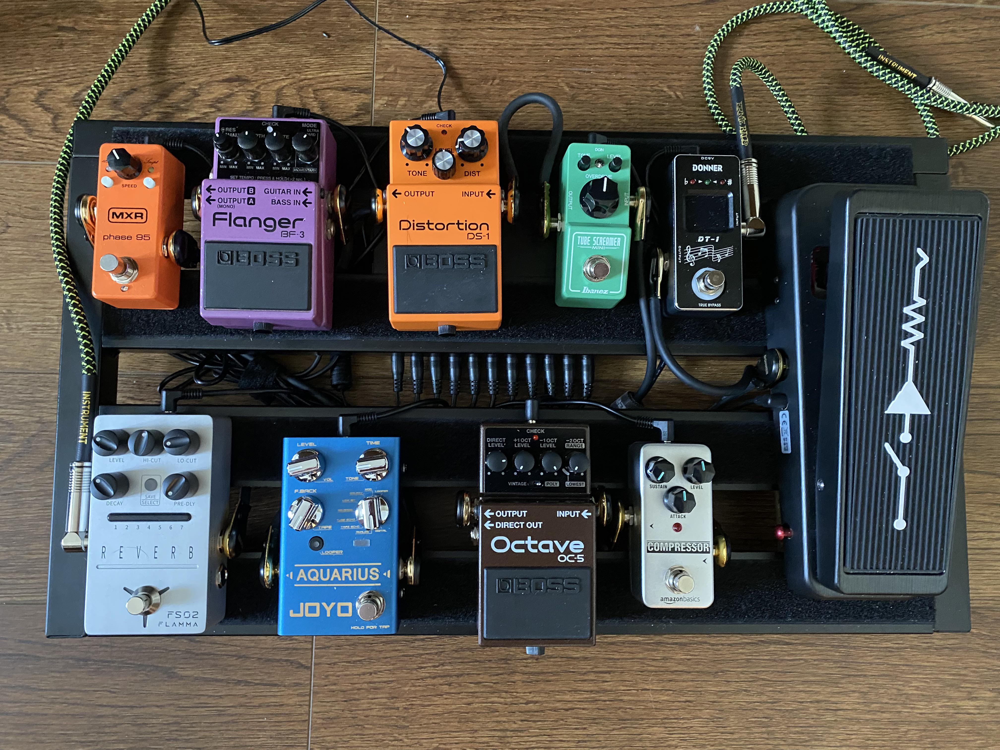
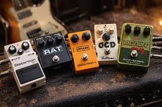
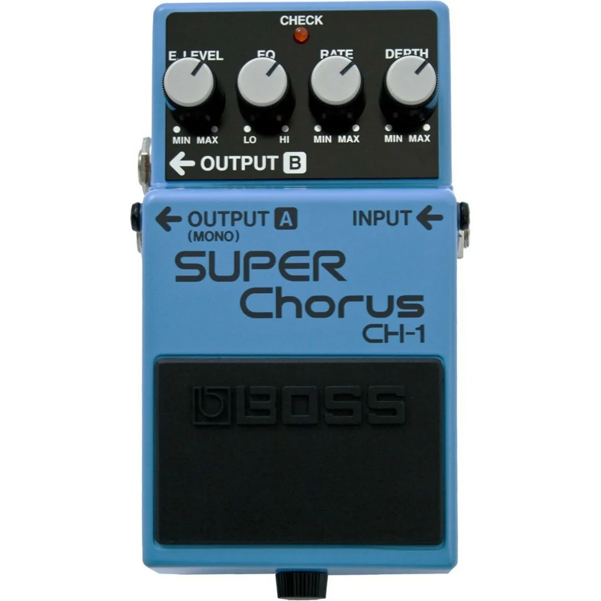
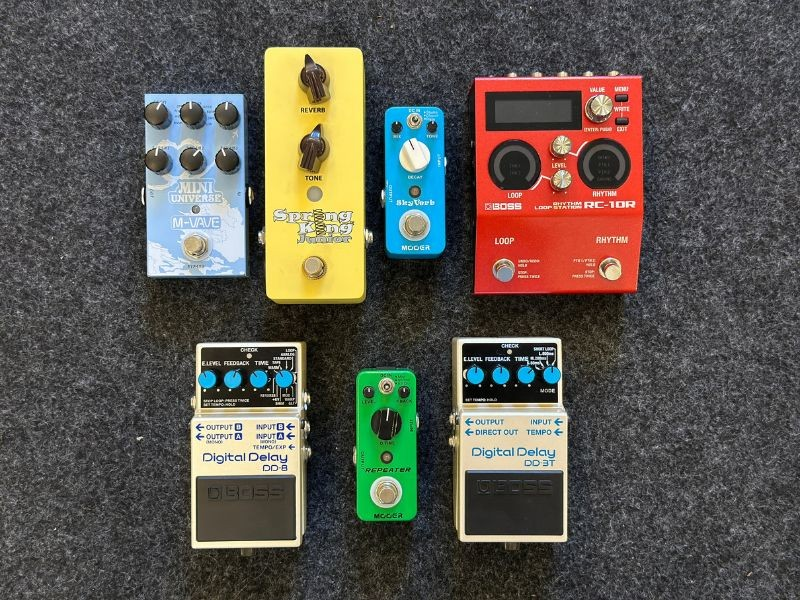
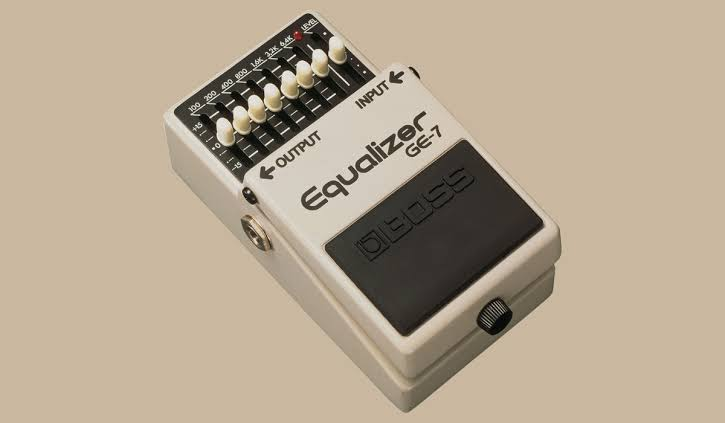

Se você está começando a explorar o mundo dos pedais de guitarra, este site é o lugar certo para você. Ele traz apenas o que é realmente essencial saber antes de comprar seu pedal, sem complicações ou informações desnecessárias. Desde os tipos de efeitos, como overdrive, delay e chorus, até dicas sobre combinações e ajustes básicos, você vai encontrar tudo de forma clara e objetiva. Perfeito para guitarristas que querem fazer escolhas conscientes e montar seu som sem perder tempo com detalhes confusos.

Os pedais de ganho são responsáveis principalmente por aumentar a saturação do sinal da guitarra. Eles podem transformar um som limpo em um timbre levemente saturado ou chegar a sons extremamente pesados. Essa categoria é fundamental na história da guitarra elétrica e está diretamente ligada à evolução do rock. Conforme os guitarristas buscavam sons cada vez mais fortes e distorcidos, surgiram diferentes circuitos para criar essas sonoridades.
O boost aumenta o nível do sinal da guitarra sem necessariamente adicionar muita distorção por conta própria. Pode ser utilizado para aumentar o volume de um solo ou para fazer o amplificador trabalhar mais forte e produzir saturação. É encontrado em praticamente todos os estilos que utilizam guitarra elétrica.
O overdrive produz uma saturação semelhante à de um amplificador valvulado sendo levado ao limite. Normalmente possui menos ganho e uma resposta mais dinâmica que uma distorção. É muito utilizado em blues, rock, indie, country e música gospel. Um dos maiores clássicos é o Ibanez Tube Screamer, que também é bastante utilizado para empurrar amplificadores e outros pedais.
A distortion oferece uma quantidade maior de saturação e geralmente produz um som mais comprimido e agressivo. Tornou-se extremamente importante com a evolução do rock e posteriormente do heavy metal. É comum em rock, hard rock, punk, grunge e metal. O Boss DS-1 é um dos exemplos mais conhecidos dessa categoria.
O fuzz possui uma sonoridade bastante característica, com uma distorção extrema e geralmente mais "rasgada" e comprimida. Os primeiros sons de fuzz surgiram de experimentos e limitações dos equipamentos da época, até que fabricantes começaram a desenvolver pedais especificamente para reproduzir esse efeito. Jimi Hendrix ajudou a tornar o fuzz mundialmente conhecido. É bastante utilizado em rock psicodélico, garage rock, blues rock, stoner rock e alternative rock.

Os pedais de modulação alteram determinadas características do sinal para criar sensação de movimento, profundidade ou variação no timbre. Eles ficaram especialmente populares a partir das décadas de 1970 e 1980 e se tornaram parte importante de vários estilos.
O chorus cria a sensação de que existem várias guitarras tocando ao mesmo tempo. Ele adiciona pequenas variações de tempo e afinação ao sinal original. É bastante associado aos timbres dos anos 1980. Muito utilizado em pop, rock, new wave, funk e indie.
O flanger também cria movimento no timbre, mas geralmente possui uma sonoridade mais intensa e metálica. Pode ser encontrado em rock, hard rock, metal, pop e música experimental.
O phaser cria uma sensação de movimento no som, produzindo uma espécie de varredura de frequências. É bastante característico do rock dos anos 1970, mas também aparece em funk, pop e música psicodélica
O tremolo altera o volume do sinal de maneira repetitiva, criando uma pulsação. Apesar de também aparecer em pedais, o efeito ficou muito conhecido por estar presente em amplificadores antigos. É bastante utilizado em surf rock, blues, rock e indie.

Os efeitos de espaço e ambiência são utilizados para fazer a guitarra parecer estar em determinado ambiente ou para criar repetições e profundidade. Eles são especialmente importantes para criar sons mais amplos e atmosféricos.
O delay repete o som da guitarra depois de determinado período de tempo. Os primeiros sistemas de delay utilizavam fita magnética. Com o avanço da tecnologia, surgiram equipamentos menores e posteriormente os pedais. Pode ser utilizado de maneira discreta ou com várias repetições. É muito comum em rock, indie, pop, ambient, gospel e música experimental.
O reverb simula as reflexões naturais do som em um ambiente. Uma guitarra sem reverb pode parecer muito seca, enquanto uma pequena quantidade pode fazer o instrumento parecer estar sendo tocado em uma sala. O efeito já era muito utilizado em amplificadores antes da popularização dos pedais. É encontrado em praticamente todos os estilos de guitarra.

Os pedais de dinâmica trabalham principalmente com a intensidade e o comportamento do sinal da guitarra. Eles podem controlar diferenças de volume, aumentar o sustain ou ajudar a manter o sinal mais consistente.
O compressor reduz a diferença entre as partes mais fortes e mais fracas do sinal. Ele pode deixar a guitarra mais uniforme, aumentar o sustain e ajudar a destacar notas. É muito utilizado em country, funk, pop, blues, rock e gospel.
Permite ajustar frequências graves, médias e agudas, ajudando a moldar o timbre e destacar a guitarra na mixagem.
O noise gate funciona de maneira diferente dos outros efeitos dessa categoria. Sua principal função é reduzir ruídos quando o guitarrista não está tocando. É especialmente útil em equipamentos com bastante ganho, nos quais chiados e ruídos podem ficar mais evidentes. É muito utilizado em rock, hard rock e metal.
Essa categoria reúne pedais que modificam determinadas frequências ou permitem ao guitarrista controlar o efeito fisicamente.
O wah-wah modifica as frequências do sinal conforme o guitarrista movimenta o pedal. O resultado é o famoso efeito que lembra uma voz dizendo "wah". O pedal se tornou muito popular no final dos anos 1960 e ficou fortemente associado a guitarristas como Jimi Hendrix. É utilizado principalmente em rock, funk, blues, hard rock e metal.
O auto-wah produz um efeito semelhante ao wah tradicional, mas sem a necessidade de movimentar um pedal de expressão. Em vez disso, o efeito reage à intensidade com que a guitarra é tocada. É muito utilizado em funk, soul, rock e música experimental.
Os pedais de pitch modificam a altura das notas tocadas pela guitarra. Eles podem criar oitavas, harmonias ou alterar a afinação eletronicamente.
O octaver adiciona uma ou mais notas em outras oitavas junto ao sinal original. Isso pode fazer uma guitarra parecer mais grave ou criar sons mais encorpados. É utilizado em rock, blues, funk, metal e música experimental.
O pitch shifter altera a altura do sinal inteiro. Dependendo do pedal, pode ser possível subir ou descer várias notas ou semitons. É bastante utilizado em rock, metal e música experimental.
O Whammy combina pitch shifting com um pedal de expressão. O guitarrista pode movimentar o pedal para aumentar ou diminuir a altura da nota enquanto toca. Tornou-se famoso por produzir efeitos bastante característicos no rock alternativo e experimental.
Além das categorias principais, existem diversos pedais que possuem funções mais específicas.
Combina o som do fuzz com uma oitava adicional, criando uma sonoridade bastante característica. É associado principalmente ao rock psicodélico e experimental.
Cria notas adicionais em determinadas relações com a nota tocada, permitindo produzir harmonias. Pode ser utilizado em rock, metal e música experimental.
O looper permite gravar uma parte tocada na guitarra e reproduzi-la em loop para que o músico possa tocar outras partes por cima. É muito útil para estudo, composição, apresentações solo e criação de arranjos.
Não existe uma ordem obrigatória. A escolha depende principalmente do som que você procura. Se você está começando, primeiro descubra qual função está faltando no seu equipamento. Se você precisa de mais saturação, procure a categoria de ganho. Se quer criar ambiência, procure delay ou reverb. Se quer deixar o timbre mais amplo, pode experimentar modulações. O mais importante é entender o que cada categoria faz antes de comprar. Assim, você evita gastar dinheiro em vários pedais que acabam fazendo praticamente a mesma coisa. Um bom pedalboard não é necessariamente aquele que possui muitos pedais, mas aquele em que cada efeito tem uma função que realmente ajuda no som que você deseja alcançar.
Depois de conhecer os principais tipos de pedais de guitarra, chegou a hora de descobrir qual deles vale mais a pena comprar primeiro. Isso depende do seu estilo musical, do seu amplificador e do som que você deseja alcançar.
Para quem gosta de rock, esses são alguns dos pedais mais interessantes para começar. Eles adicionam ganho e dão mais personalidade ao som da guitarra.
O overdrive oferece uma saturação mais suave e natural, ideal para blues, rock clássico e músicas que precisam de um som levemente distorcido.
Exemplos: Ibanez Tube Screamer, Boss SD-1 e Boss BD-2.
A distorção produz um som mais intenso e agressivo, sendo muito utilizada em estilos como hard rock, punk rock e heavy metal.
Exemplos: Boss DS-1, ProCo RAT e Boss MT-2.
O delay repete o som da guitarra, criando um efeito de eco. Ele é muito utilizado em solos, introduções e músicas que precisam de mais profundidade.
É uma boa escolha para quem toca rock alternativo, rock moderno ou música de igreja.
Exemplos: Boss DD-3T e TC Electronic Flashback.
O chorus cria uma sensação de que vários sons semelhantes estão sendo tocados ao mesmo tempo. Isso deixa o timbre mais amplo e encorpado.
É bastante usado em músicas de rock alternativo, pop e sons limpos de guitarra.
Exemplos: Boss CH-1 e MXR Analog Chorus.
O afinador ajuda a manter a guitarra afinada e pronta para tocar. Embora não mude o timbre da guitarra como os outros efeitos, é um dos acessórios mais úteis para qualquer guitarrista.
Exemplos: Boss TU-3 e TC Electronic Polytune.
Se você está começando e quer montar sua primeira pedaleira, uma boa ordem de prioridade é:
Antes de comprar vários pedais, considere também uma pedaleira digital. Ela reúne diversos efeitos em um único equipamento, geralmente oferecendo uma opção econômica e versátil para experimentar diferentes timbres.
Se você ainda está descobrindo seu estilo musical, uma pedaleira pode ser uma ótima escolha antes de investir em vários pedais individuais.
Não existe um único pedal ideal para todos os guitarristas. Para quem gosta de rock, um overdrive ou uma distorção costuma ser um ótimo começo. Já quem procura timbres limpos e ambientes pode preferir chorus ou delay.
O mais importante é escolher um pedal que combine com as músicas que você gosta de tocar e com o equipamento que já possui.